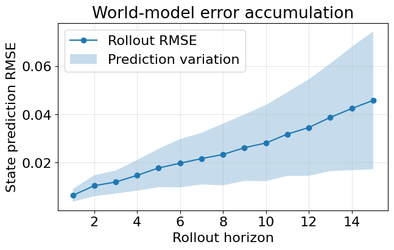

Two Ways to Build a World Model: Lessons from PETS, Cosmos 3, and Closed-Loop Navigation
A practical reflection on predictive dynamics, action-conditioned future video, and failure-aware data collection.
This summer, I stopped treating a world model as one fixed architecture. The same phrase can describe a compact dynamics model built for planning, or a generative model that renders the future in pixels. Working with PETS, Cosmos 3, and an Isaac Sim navigation pipeline made the difference concrete: the central question is not only whether a model predicts, but what it predicts, how actions enter the prediction, and what decision the prediction is meant to support.
1. Why "world model" means different things
My entry point into this topic was video generation. Diffusion models, latent video representations, and temporal attention all seem like natural building blocks for a model of the physical world: compress observations, learn how they evolve, and decode possible futures. But that view can quietly make visual realism the objective. A generated future may look convincing while being insensitive to the action that was supposed to cause it.
Model-based reinforcement learning starts from the opposite end. It asks what predictive structure an agent needs in order to choose actions. The internal state does not have to be photorealistic. It has to preserve the parts of the environment that matter for rewards, constraints, uncertainty, and planning. Classical systems such as World Models, PlaNet, Dreamer, and PETS differ in architecture, but they share this decision-oriented pressure [1-4].
Cosmos 3 represents another pressure. Its action-conditioned generator models future visual observations from an initial observation and an action sequence [6]. That creates a richer simulation surface: people can inspect motion, contact, appearance, and temporal coherence directly. It also creates a harder evaluation problem. Pixel similarity, physical plausibility, action responsiveness, and usefulness for control are related, but they are not interchangeable.
Predictive dynamics for control
Learn compact state transitions and uncertainty so an optimizer or policy can choose actions.
Action-conditioned future video
Generate future observations that remain visually coherent and causally responsive to actions.
I therefore see these as two technical stacks rather than two competing definitions. The MBRL stack compresses the world toward decision-relevant dynamics. The generative stack expands a conditioning signal into an inspectable future. My navigation work sits between them: it creates controlled trajectories that can train or evaluate either kind of predictor.
This distinction also changes what it means to say that a model has "understood" a scene. For a controller, understanding may mean predicting whether a turn reduces distance to the goal or enters an unsafe state. For a video generator, it may mean preserving the robot's geometry, camera motion, obstacle identity, and contact response over many frames. Both are legitimate, but neither can inherit the other's success criteria automatically. Using one phrase for both systems is helpful only when the prediction target and downstream use remain explicit.
2. Stack I: predictive dynamics for control
PETS made the control-oriented view concrete for me. Instead of learning one deterministic next-state function, PETS uses a probabilistic ensemble. Each network predicts a distribution over the next-state delta, and disagreement among ensemble members exposes part of the model's epistemic uncertainty. Planning is then performed over the learned model with the Cross-Entropy Method (CEM): sample action sequences, evaluate their imagined returns, keep the elite set, and iteratively refit the sampling distribution [4].
The two forms of uncertainty play different roles. A network's predicted variance can express stochasticity or noise within one learned hypothesis, while disagreement across independently trained ensemble members signals that the available data support several hypotheses. The distinction is imperfect in practice, but it is operationally useful: imagined trajectories should spread when the controller asks the model to leave well-covered regions. A planner that sees only a mean transition may instead treat an unsupported optimistic prediction as certain.
In my MBRL-Lib experiment, I used the continuous CartPole tutorial as a transparent test bed [5]. The model was a five-member Gaussian ensemble trained on state deltas. Initial data came from 200 random interaction steps. The planner used a horizon of 15, a population of 500 candidate action sequences, five CEM iterations, and 20 particles. With fixed-model propagation, each particle keeps the same ensemble member across its imagined trajectory, corresponding to the TS-infinity treatment used by PETS.
Running the controller was useful, but the more revealing experiment was simpler. I sampled one fixed 15-step action sequence, executed it in the real environment, and then rolled out 20 stochastic predictions from exactly the same initial state in the learned model. At every horizon, I measured state RMSE between the true trajectory and the model samples. This isolates the model from the planner: when the curve grows, it is prediction error accumulating through recursive rollout, not CEM choosing a poor action.

This small experiment changed how I interpret model quality. One-step validation loss can be low while long-horizon imagined trajectories drift. Planning can also exploit errors that look harmless under average prediction metrics. For MBRL, the important object is therefore not a frame or an isolated transition. It is the distribution of trajectories produced when the model is repeatedly queried by a decision procedure.
There is also a feedback effect: the model shapes the data that will be collected next. CEM selects actions using the current learned dynamics, those actions visit a new part of the real environment, and the resulting transitions are added to the replay buffer. A model error is therefore not just an offline prediction mistake. It can redirect exploration. This is one reason model-based control needs calibration, conservative planning, and repeated real-world correction rather than a single train-once dynamics model.
3. Stack II: action-conditioned future video
Cosmos 3 moves the prediction target back into observation space. For robot forward dynamics, the generator receives an initial visual observation and an action chunk, then produces the following video frames. A compact way to write the task is:
The equation looks similar to a transition model, but the engineering stack is very different. Inputs have embodiment-specific action schemas and multiple camera streams. Videos pass through spatial and temporal preprocessing. The model generates a high-dimensional future whose errors include blur, object deformation, background drift, temporal flicker, contact mistakes, and action neglect. A visually plausible output is only the beginning of the evaluation.
I find it useful to separate four evaluation layers. First, the interface must be correct: frames, action dimensions, timing, and preprocessing must align. Second, the video must remain perceptually stable. Third, motion and contacts must respond to the supplied action. Fourth, the predicted outcome must agree with the physical rollout at the level relevant to a decision, such as success, collision, or recovery. A failure at an earlier layer invalidates conclusions at the later ones. For example, measuring outcome agreement is meaningless if action timestamps are shifted by one frame.
My first goal was deliberately narrow: make the official DROID action cookbook work with the
base Cosmos3-Edge checkpoint under a fixed, reproducible configuration. The compatibility work
covered transitional LeRobot metadata, the read-only domain and viewpoint fields expected by
the cookbook, DROID feature mapping, and local loading of the required video autoencoder. The
real-data gates verified three camera streams with 17 frames, a (16, 10) DROID action
chunk, padding to the model's (16, 64) action representation, and the expected
480-tier video preprocessing shape.
After a successful one-window end-to-end smoke test, I ran a five-window pilot at DROID frame indices 0, 16, 32, 48, and 64. Each window independently used its ground-truth conditioning frame and predicted the next 16 frames. The conditioning frame was excluded from future-frame PSNR. All five generations completed successfully, and the mean of the five window PSNR values was 17.084 dB. On one NVIDIA H20, generation averaged 12.023 seconds per window.
The next question is also stricter than PSNR: does the future change correctly when the action changes? Zero actions, shuffled actions, direction changes, and magnitude perturbations are valuable because they test causal sensitivity while holding the initial observation fixed. Without such interventions, a generator can score reasonably by following visual momentum and still fail as a world model for decision making.
These controls also reveal whether the model is using actions or merely treating them as a weak style signal. If zero, reversed, and nominal action chunks produce nearly the same motion, the initial video context is dominating the rollout. If small action changes create unrelated scene changes, conditioning is unstable in the opposite direction. The desired behavior lies between these extremes: smooth visual continuity together with a measured, directionally correct response to intervention.
5. What the two stacks actually optimize
| Dimension | MBRL / PETS-style stack | Cosmos 3 future-video stack |
|---|---|---|
| Prediction space | Compact state or latent transition, optionally reward | High-dimensional future visual observations |
| Primary pressure | Preserve information needed for return and constraints | Preserve appearance, motion, temporal coherence, and action effects |
| Use of actions | Planner repeatedly queries the model under candidate actions | Generator conditions one future rollout on a supplied action sequence |
| Decision mechanism | CEM, MPC, policy optimization, or latent imagination | External; the generator itself does not choose the route |
| Typical failure | Compounding state error, uncertainty collapse, planner exploitation | Action neglect, temporal drift, contact errors, visual deformation |
| Useful evaluation | Long-horizon error, return, calibration, planning success | Action responsiveness, outcome agreement, timing, perceptual quality |
Neither stack is simply more complete. A compact model may omit textures and still support excellent control. A video model may capture details that a low-dimensional state cannot, yet remain too slow or too weakly conditioned for online planning. The correct representation is defined by the question being asked.
6. My current view
The first lesson I take from these implementations is that action responsiveness is a more basic requirement than visual quality. A world model is not only a predictor of what usually happens next. It should distinguish futures caused by different actions from the same state. Intervention-based evaluation is therefore central for both a PETS ensemble and a video generator, even though the measurements differ.
Second, compounding error is not exclusive to compact dynamics models. In PETS it appears as state RMSE growing across recursive rollout. In future video it appears as motion drift, identity changes, geometry errors, or lost action influence. Autoregressive chunks can look acceptable in isolation while becoming inconsistent over a longer horizon. Evaluating only the first prediction step hides the problem in both stacks.
Third, counterfactual data quality matters as much as model scale. A nominal and perturbed pair with a shared initial snapshot and identical causal prefix gives a much cleaner supervision signal than two unrelated success and failure episodes. It supports questions about the exact onset of divergence, the effect of perturbation strength, and whether a model captures recovery after the fault disappears.
Finally, visual plausibility is not the same as decision usefulness. For a predicted future to help an agent, it must preserve the ordering of candidate actions, represent safety-relevant events, and expose uncertainty where the data do not support confident prediction. PSNR, reward, and success rate each reveal one part of this story. None should be allowed to stand in for the others.
A related practical lesson is that reproducibility work is part of model understanding. Fixing repository revisions, validating tensor shapes, separating a smoke test from a benchmark, and recording the exact action contract may look like engineering around the model. In reality, these steps determine what experiment was run. Without them, an apparent architecture insight can be caused by a mismatched dataset version, a silent preprocessing change, or an evaluation frame included by mistake.
7. Open questions and references
My next experiment is still a proposal, not a completed result: post-train a Cosmos3 model on a
fixed scene, robot, and camera distribution, then evaluate held-out trajectories and action
perturbations from that scene. I want to distinguish rho_fail, the perturbation
strength at which Isaac changes from success to failure, from rho_fidelity, the
point at which the generated future stops matching Isaac. The gap between them would say more
about action-conditioned simulation than a single perceptual score.
Longer term, I am interested in whether a visual world model can become a useful prior for a compact control model: generating difficult trajectories, ranking candidate policies, or identifying where a latent planner needs more real interaction. The two stacks may converge, but only if the interface between prediction and decision is evaluated explicitly.
- D. Ha and J. Schmidhuber. World Models, 2018.
- D. Hafner et al. Learning Latent Dynamics for Planning from Pixels (PlaNet), 2019.
- D. Hafner et al. Dream to Control: Learning Behaviors by Latent Imagination, 2020.
- K. Chua et al. Deep Reinforcement Learning in a Handful of Trials using Probabilistic Dynamics Models, 2018.
- L. Pineda et al. MBRL-Lib: A Modular Library for Model-based Reinforcement Learning, 2021.
- NVIDIA et al. Cosmos 3: Omnimodal World Models for Physical AI, 2026.
- NVIDIA. Cosmos open-source repository and action-generation cookbooks.